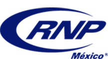

<div class="panel panel-default">

    <div class="panel-body">
        <div class="row">
            <div class="col-md-12 text-center">
                <font size="20px" face="URW Palladio L">Refacciones Neumaticas La Paz</font>
            </div>
        <div class="row">
            <div class="col-md-12">
                <div class="col-md-8">
                    <div class="media">

                        <div class="media-left media-middle">
                            <a href="#">  </a>
                        </div>
                        <div class="media-body">

                            <h4 class="media-heading">
                                
                            </h4>
                            <p class="text-justify"><font size="4.5" face="URW Palladio L">Somos una empresa líder en manufactura de Perforadoras Neumáticas e Hidráulicas y de sus repuestos.
                                40 años de trabajo continuo nos respaldan, dándonos así la experiencia y el conocimiento
                                para fabricar con la mas alta tecnología y calidad. Tenemos presencia en más de 15 países,
                                entre los que destacan Canadá, Estados Unidos, Colombia, Argentina, Francia, Chile, Nicaragua,
                                entre otros. Oficinas en México, Perú y Bolivia así como distribuidores en América, Europa
                                y África.
                                <p>
                                    <p>
                                        <p class="text-justify">Nuestra manufactura está basada en máquinas de Control Numérico Computarizado (CNC), que ligado con la mano de obra calificada,
                                        se obtiene productos estandarizados de alta precisión y calidad. Nuestra materia
                                        prima proviene de los mejores proveedores en el mundo. Cada pieza pasa por una estricta
                                        serie de procesos para asegurar su rendimiento. Los hornos de tratamientos térmicos
                                        aseguran la dureza necesaria que requiere cada pieza, para garantizar que su desempeño
                                        sea adecuado bajo las condiciones extremas de trabajo a las que son sometidas. Cumpliendo
                                        así las expectaticas de calidad a nivel mundial en soluciones de barrenación.
                                        <p></p></p>

                            </font>
                        </div>
                    </div>
                </div>
                <div class="col-md-4">
                    <div class="embed-responsive embed-responsive-16by9">
                        <iframe class="embed-responsive-item" src="https://www.youtube.com/embed/-dAuIE0t8ak"></iframe>
                    </div>

                </div>
            </div>
        </div>
    </div>
</div>